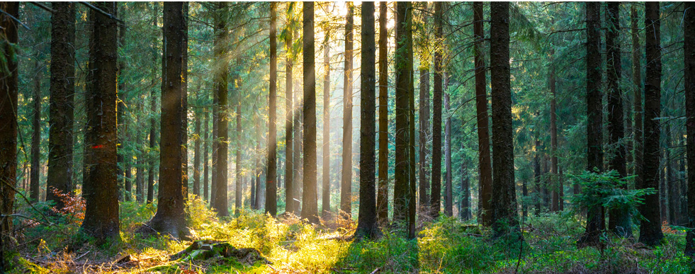
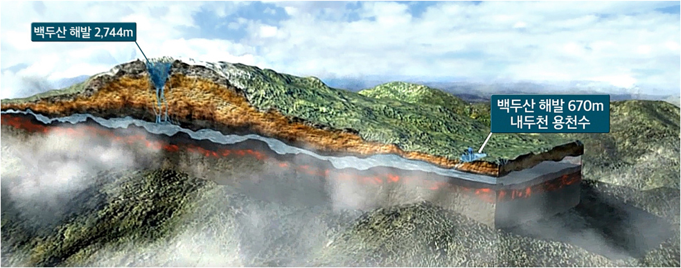
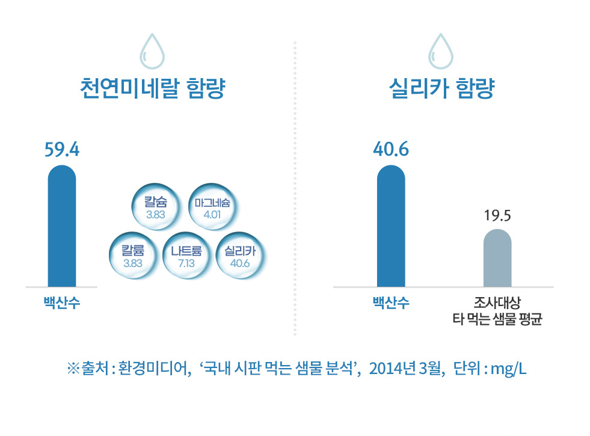
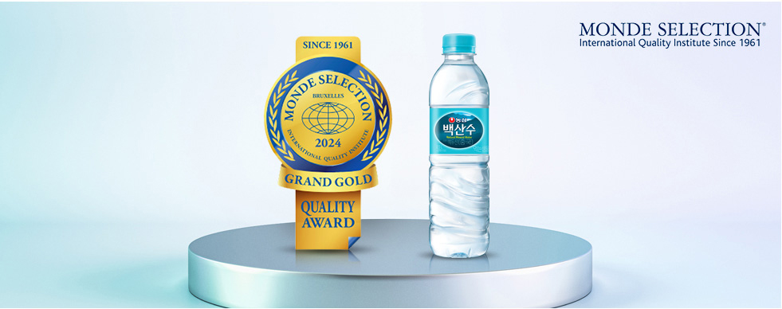
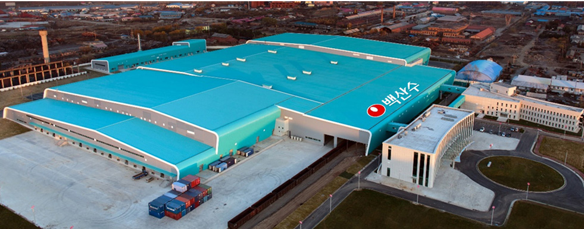

> 브랜드스토리
> 브랜드스토리
브랜드스토리
화산암반 용천수 천지차이 백산수
-
 백두산 청정원시림
태곳적부터 지켜온 백두산 청정원시림 보호구역
보호구역일대의 너비 2,1000km, 서울과 인천을 합한 것보다 크고
설악산한국국립공원의 약 13배에 달하는 면적의 광활한 청정원시림에는 공해공장과 동물축사,
식물동물농장이 들어오지 못하고 철저하게 보호되어 천혜의 대자연을 간직하고 있습니다.
-
 백두산 화산암반층이 오랜 세월 거르고 거른물
백산수는 백두산 천지와 그 일대로부터 약 45km의 여정을 거칩니다
수 백만년 동안 형성된 화산암반층을 따라 약 40년을 흘러
불순물은 필터링 되고, 우리 몸에 필요한 천연미네랄이 균형있게 녹아듭니다.
백산수는 자연과 시간이 빚어낸 물이에요
"한국지질자원연구원분석결과"
-
자연의 힘으로 스스로 솟아나는'용천수'
45km의 여정을 거친 백산수는 해발고도 약 670m의 내두천에서 영상과 영하의 기온을 오가는
환경에서도, 언제나 연중 6~7도c를 유지하며자연의 힘으로 스스로 솟아납니다.
덕분에 백산수는 일년 내내 늘 일정한 품질을 유지합니다.
백산수는 펌프로 물을 끌어 올리지 않고, 솟아나는 물을 그대로 담아 자연을 훼손하지 않습니다.
-
 -
 몽드셀렉션(Monde Selection)대상 수상
농심 백산수는 세계적인 권위의 품질평가기관, 몽드셀렉션으로부터
최고등급인 대상을 수상하며 품질 우수성을 인정 받았습니다.
-
 사람의 손이 닿지 않는 농심스마트팩토리
백산수는 농심 스마트팩토리에서 취수,생산,출고까지 모든 공정이
최첨단 무인자동화설비를 통해서 이루어져요.
공장 내의 철도설비를 통해서 고객에게 자연을 그대로 전달합니다.